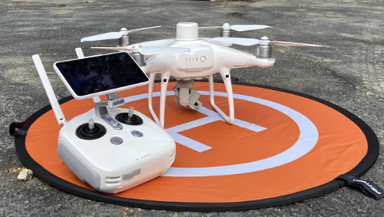
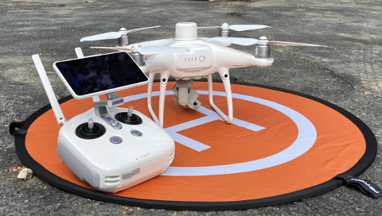

自己紹介
はじめまして、ジョウ所長です。
公共・土木工事の現場をICT技術でサポートする専門家です。
事業内容
公共・土木工事におけるICT測量及び支援
最新のICT技術を活用し、測量から設計、施工、検査に至るまで、建設プロセスのあらゆる段階をサポートします。3DレーザースキャナーやUAV（ドローン）を駆使し、高精度なデータ取得と効率的な現場管理を実現します。
 


工事書類作成代行・支援
複雑で時間のかかる工事書類の作成を代行・支援します。正確かつ迅速な書類作成で、現場の負担を軽減します。
YouTube
YouTubeチャンネル「ジョウ所長の土木技術者サポートチャンネル」では、ICT技術や土木業界に関する情報を発信しています。ぜひご覧ください。
会社ホームページ
より詳しい事業内容については、会社のホームページをご覧ください。
ジョウ所長が経営する(株)兵庫土木サポート
今後の拡張について
- お問い合わせフォームの設置
- 実績紹介ページの追加
- ブログ機能の追加